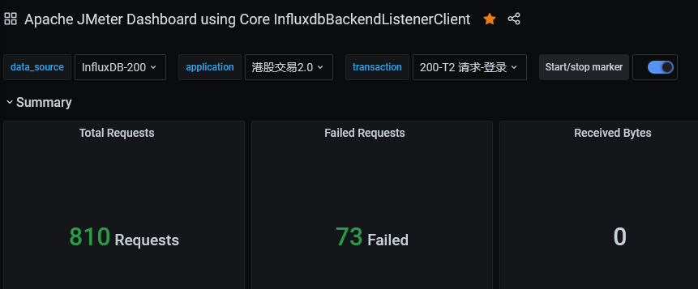

Linux搭建Jmeter压测环境
文章目录
背景
众所周知本人对硬件有很浓厚的兴趣，凑巧测试组在用Jmeter做压力测试，发现性能上不去，作为好奇宝宝的我果断出击，试试公司的压测是怎么玩的。此处还有个小故事，在某个久远的时间点，在开源中国看过一篇帖子，如何绘制看上去更加高大上的性能压测图，在测试围观过windows版本执行测试，已经做到了可视化的TPS数据展示，另外配置一份web面板能有什么用？
脑子想的都是想当然的东西，你要去试试才明白 Don’t use GUI mode for load testing! only for Test creation and Test debuggin.
官方推荐的是通过命令行的方式获取压测报告，绘制GUI的方式展示，存在数据上的误差？对于Jmeter了解的不是很深入，至少找到一个理由去折腾一下Linux版本的控制台面板
开源中国的帖子，核心组件的部署方式并不友好，安装所需的文件也需要关注公众号才能下载，作为新生代的好青年，当然是用Docker替代了。说白了还是自己服务器在境内，跨境的源地址访问速度都很慢，至少镜像服务，阿里云有个免费的加速。
关于docker的安装部署，此处不再赘述，推荐参考以前的稿子。
接下来的内容氛围两大块：基本测试环境组件的搭建、各个组件的简单认知讲解
Jmeter
Apache JMeter是Apache组织开发的基于Java的压力测试工具。用于对软件做压力测试，它最初被设计用于Web应用测试，但后来扩展到其他测试领域。 它可以用于测试静态和动态资源，例如静态文件、Java 小服务程序、CGI 脚本、Java 对象、数据库、FTP 服务器， 等等。JMeter 可以用于对服务器、网络或对象模拟巨大的负载，来自不同压力类别下测试它们的强度和分析整体性能。另外，JMeter能够对应用程序做功能/回归测试，通过创建带有断言的脚本来验证你的程序返回了你期望的结果。为了最大限度的灵活性，JMeter允许使用正则表达式创建断言。
Apache jmeter 可以用于对静态的和动态的资源（文件，Servlet，Perl脚本，java 对象，数据库和查询，FTP服务器等等）的性能进行测试。它可以用于对服务器、网络或对象模拟繁重的负载来测试它们的强度或分析不同压力类型下的整体性能。你可以使用它做性能的图形分析或在大并发负载测试你的服务器/脚本/对象。
Jmeter 部署 centos7
安装JDK运行环境、下载Jmeter安装包
yum install java-1.8.0-openjdk -y && \
wget https://mirrors.bfsu.edu.cn/apache//jmeter/binaries/apache-jmeter-5.4.tgz && tar -xf apache-jmeter-5.4.tgz
配置环境变量
export JMETER_HOME=$HOME/jmeter/apache-jmeter-5.4
export PATH=$JMETER_HOME/bin:$PATH
Jmeter 命令
最后会对接Grafana控制面板，可以不输入-l参数，在web控制台观察数据
jmeter -n -t /tmp/order-500-10s.jmx -l /tmp/jmeter-order-report-20200109/order-500-10s.jtl
# 一般不用测试结果和测试报告，简化命令
jmeter -n -t /tmp/order-500-10s.jmx
InfluxDB
InfluxDB是一款用Go语言编写的开源分布式时序、事件和指标数据库，无需外部依赖。该数据库现在主要用于存储涉及大量的时间戳数据，如DevOps监控数据，APP metrics, loT传感器数据和实时分析数据。
InfluxDB 特点
InfluxDB的特点可以归纳为以下9个方面：
- 无结构(无模式)：可以是任意数量的列;
- 可以设置metric的保存时间;
- 支持与时间有关的相关函数(如min、max、sum、count、mean、median等)，方便统计;
- 支持存储策略:可以用于数据的删改。(influxDB没有提供数据的删除与修改方法);
- 支持连续查询:是数据库中自动定时启动的一组语句，和存储策略搭配可以降低InfluxDB的系统占用量;
- 原生的HTTP支持，内置HTTP API;
- 支持类似sql语法;
- 支持设置数据在集群中的副本数;
- 支持定期采样数据，写入另外的measurement，方便分粒度存储数据。
InfluxDB docker 安装
mkdir influxdb && cd influxdb && \
docker run -p 8086:8086 -d --name influxdb -v $PWD:/var/lib/influxdb influxdb:1.7
docker exec -it influxdb /bin/bash 进入容器，执行命令，人工创建数据库
root@bce0a55bbc72:/# influx
Connected to http://localhost:8086 version 1.7.10
InfluxDB shell version: 1.7.10
> 交互面板执行命令
InfluxDB 创建数据库和用户
创建数据库：create database jmeter_t2 查看数据库：show databases 切换数据库：use jmeter_t2 创建用户：create user “admin” with password ‘admin’ with all privileges 查看用户：show users
> show users
user admin
---- -----
admin true
如果显示用户权限admin为true，数据库的准备工作就完成了
Grafana
编写测试案例的时候发现，图表展示的效果其实没太多必要，接口的tps数据在命令行执行的时候已经能观测到，更多是想知道程序内部的耗时
简单部署grafana控制台面板，导入配置文件对接InfluxDB
控制台支持通过标签过滤测试结果，一般只需要配置一个InfluxDB数据库即可：
- 应用名称
- 测试案例名称

docker run -d --name=grafana -p 3000:3000 grafana/grafana:7.3.1
网页版由于采样器间隔会导致计算的TPS和相关数值与Jmeter聚合报告不相符，参考链接：https://www.vinsguru.com/jmeter-real-time-results-influxdb-grafana/
资料中也描述了如何自定义监听器
后记
- 高性能的程序模式必然是 one loop thread，任何的锁、入队列和出队列，都会造成不必要的性能损失
- 核心业务逻辑的耗时大于引入其他代码的耗时，并发才能有效提高效率，核心耗时如果足够小谨慎引入其他代码